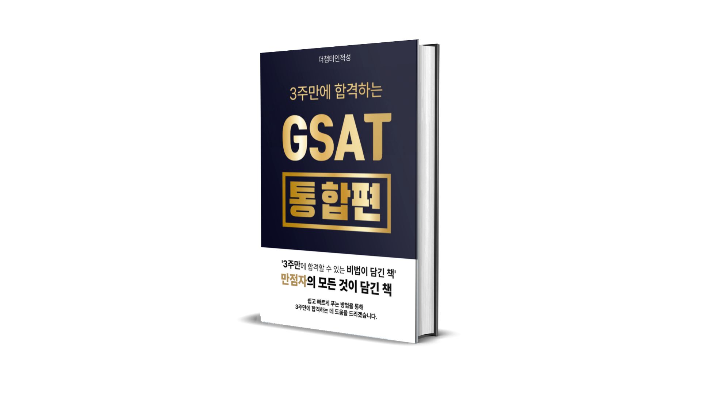
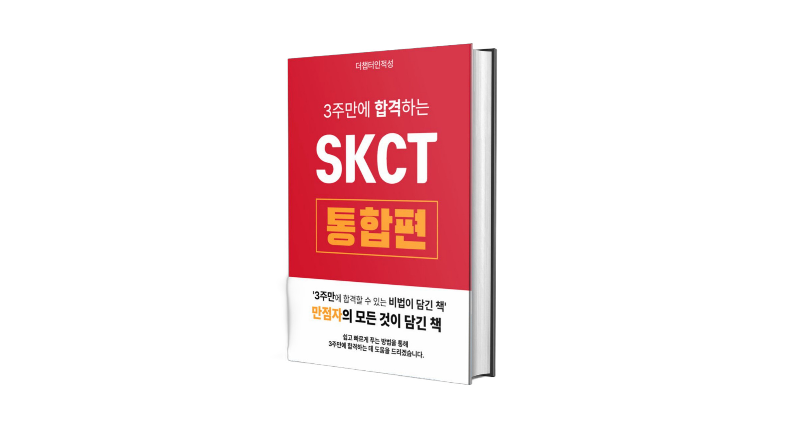

내가 풀 수 있는 최대한의 문제를
정답률 높게 맞추는 시험이에요.
출제위원 현직자가 직접 운영하는 3주 집중 스터디
개인별 진단 & 1:1 맞춤 피드백
⚠️ 인원 제한 · 매 기수 빠르게 마감
시중의 학원, 인강에서는 "빠르게 푸는 방법"만 알려주고
개별 진단은 해주지 않는 게 현실이에요.
실제 올인뿌 수강생들의 이야기입니다
"올인뿌를 안했다면 합격하지 못했을 것 같다고 말씀드리고 싶습니다."
4기 수강생
48점 고득점 달성
"시험날 45/50을 찍고 직무에서 상위 4%에 들어 맘편하게 면접 준비합니다. 취업준비를 하며 가장 잘 한 일 같습니다."
7기 수강생
45/50, 직무 상위 4%
"3주 빡세게 하면 지사트 끝나고 허탈이 아니라 행복한 웃음을 짓게 해줍니다."
7기 수강생
26개 → 40개 성장
299,000원에 이 모든 것이 포함됩니다
진단 테스트 후 올인 LV별 맞춤 로드맵을 제공합니다.
틀린 이유와 개선 방법을 꼼꼼히 코칭해드립니다.
더챕터인 모의고사 + 해설강의를 제공합니다.
정가 219,000원 상당 전체 강의 제공
(시스템 상 200원 추가 결제 필요)
자료해석·계산력 학습지 + 유형별 진단표 제공
아침 확언, 열품타 스터디방 초대로 몰입 환경 조성
체계적인 3단계로 실력을 끌어올립니다
Week 1
Week 2
Week 3
⚠️ 인원이 제한되어 있으며, 매 기수 빠르게 마감됩니다.
한 달 취업 앞당기기 = 최소 300~400만원, 그 가치의 10% 미만 투자
포함 내역
할인 혜택
전자책 20% 할인
GSAT/SKCT 통합편 53,000원 → 43,000원
기존 VOD 구매자
결제 취소 후 스터디 전환 가능
3주만에 합격할 수 있는 비법이 담긴 책

3주만에 합격하는 GSAT

3주만에 합격하는 SKCT
올인뿌 9기 수강생 대상 전자책 20% 할인 혜택
처음이신 분은 기본서 1권을 먼저 풀고 참여해주세요.
· GSAT: 해커스 파랑이
· SKCT: 에듀윌
가능합니다. 허나, 스터디 참여하기에 앞서 최소 해커스 파랑이 기본서 한 권은 필수적으로 풀고 참여해주세요. 안 그럼 못 따라갑니다.
스터디가 4주 동안 진행되는데, 아예 처음 접하시면 기본서 파악에만 시간을 많이 써야 합니다.
스터디 참여하고 싶으시다면, 스터디 시작 전에 기본서 한 권을 보시고 어떤 유형인지, 어떤 문제가 나오는지 익히고 참여하셔야 합니다.
네 괜찮습니다. 대기업 인적성 시험은 독해력이 좋다고 높은 점수를 받는 시험이 아닙니다.
본인에게 어려운 지문은 잘 넘기고, 푼 문제를 높은 정답률로 맞추는 능력이 더 중요합니다.
만약 대기업 인적성을 처음 접한다면, "3주 만에 합격하는 GSAT/SKCT"를 보는 것을 추천드립니다.
교재 구매 : https://litt.ly/thechapterin
시중의 문제집을 사용해주셔도 됩니다. 영역별 대표적인 기본서는 다음과 같습니다.
이외에 렛유인, 위포트 등이 있습니다.
저도 실제 시험 때 너무 떨렸습니다. 너무 긴장이 많이 돼서 배도 아프고 했던 기억이 있네요.
우선, 시험 전날 무리하게 공부하는 것은 금물입니다.
대기업 인적성은 그날 컨디션과 환경의 영향을 많이 받습니다. 시험 전날은 최대 2~3시간만 공부하며 나머지 시간은 쉬는 걸 추천드립니다.
7시간 이상은 주무셔야 합니다. 아침에 간단하게 계단 연습, 지문 읽는 연습하고 시험 보시면 됩니다.
4주밖에 시간이 남지 않았다면, 직장 생활 외에는 모든 시간을 인적성에 전념해주셔야 합니다.
평일 최소 4~5시간, 주말 8~9시간은 투자해주셔야 합니다.
올인뿌 N기 과정에서 개인 피드백만 제외된 상품입니다.
혼자서 커리큘럼대로 충분히 따라갈 수 있다 하시는 분들은 VOD로 신청해주시면 됩니다.
GSAT과 SKCT는 다른 영역이라봐도 무방합니다.
GSAT은 필기구를 사용하여 풀고, SKCT는 필기구 없이 키보드, 마우스로만 풀어야 하기 때문입니다.
즉, 스터디를 참여하신다면 GSAT/SKCT 중 한 영역을 선정하신 후 공부해주시면 됩니다.
스터디 방법론은 한 번 배우면 다른 시험에도 사용할 수 있기 때문에, 스터디가 끝난 뒤 다른 영역에 그대로 적용해서 공부해주시면 됩니다.
올인뿌 9기 신청하실 경우, VOD 구매 결제 취소 해드리고 있습니다.
메일로 인증만 해주시면 됩니다.
출제위원 현직자의 1:1 맞춤 코칭으로
당신의 인적성 점수를 끌어올려 드립니다.
사전 모집 기간: 2월 18일 ~ 3월 3일